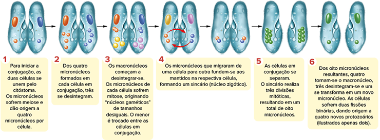

<!DOCTYPE html>
<html lang="pt-BR">

<head>
    <meta charset="UTF-8">
    <meta http-equiv="X-UA-Compatible" content="IE=edge">
    <meta name="viewport" content="width=device-width, initial-scale=1.0">
    <title>Lumen</title>
    <link rel='stylesheet' type='text/css' href='./css/style.css' />
    <link rel='stylesheet' type='text/css' href='./css/global.css' />
</head>

<body>
    <main>
        <div class="body">
            <div class="main">
                <div class="section">

                    <div class="content-fullwidth-area">
                        <div class="titulo-cap-section">
                            <div class="cap-section">
                                <span class="cap-texto">Capítulo</span>
                                <p class="cap-number">
                                    1
                                </p>
                            </div>
                            <div class="titulo-cap-background">
                                <h1 class="título-cap">
                                    Protozoários
                                </h1>
                            </div>
                        </div>
                        
                    </div>

                    <!-- home -->
                    <div class="text-content-area">
                        <p class="img-subtitle">
                        </p>
                        <p class="img-credit">
                            Protozoário Didinium (marrom) inicia o processo de ingestão (fagocitose) de outro protozoário de tamanho maior, um Paramecium (azul).
                        </p>
                        <p class="general-text">
                            Jamais meus olhos se depararam com visão mais agradável do que esta: a de tantos milhares de criaturas vivendo em uma gotícula de água. </p>
                        <p class="quote-source">VAN LEEUWENHOEK, A. apud REECE, J. B. . Biologia de Campbell. 10. ed. Porto Alegre: Artmed, 2015.</p>
                        <p class="general-text">O aprimoramento do microscópio e as primeiras observações e descrições de características dos protozoários são atribuídos ao naturalista holandês Anton van Leeuwenhoek (1632-1723). Desde aquela época, esses microrganismos têm intrigado
                            e fascinado os cientistas, seja pela imensa variedade das suas formas e dimensões, seja pela dificuldade de estabelecer sua história evolutiva. Após os primeiros registros da existência desses seres vivos e diante da constatação
                            de que os protozoários realizam todas as funções biológicas vitais &#8211; digestão, excreção, respiração, reprodução e interação com o ambiente, respondendo a estímulos &#8211;, eles foram considerados um único filo, pertencente
                            ao reino Animal: o filo Protozoa (do grego proto e zoa, que significam &#8220;primeiros animais&#8221;). Mais tarde, porém, eles foram inseridos no reino Protista, por compartilharem características com alguns grupos de algas.
                            Atualmente, as análises moleculares e as comparações genéticas, cada vez mais aprimoradas, têm exigido mudanças significativas na hipótese filogenética dos eucariontes e, com relação aos protozoários, a complexidade tem se
                            mostrado muito maior do que o imaginado.</p>

                    </div>

                    <!-- bullet and boxe-2 -->
                    <div class="text-content-area">
                        <!-- bullet -->
                        <div class="bullet-list-section">
                            <ul class="bullet-list">
                                <li class="general-text">
                                    Quais são as diferenças entre as classificações antiga e recente dos protozoários?
                                </li>
                                <li class="general-text">
                                    Como os protozoários capturam os alimentos e realizam a digestão?
                                </li>
                                <li class="general-text">
                                    Como se dá a reprodução dos protozoários?
                                </li>
                            </ul>
                        </div>
                        <!--boxe-2  -->
                        <div class="boxe-06-02-cie-hab">
                            
                            <p class='chapter-description'> Neste capítulo serão abordadas as habilidades
                                <span class='boxe-06-texto'>
                                  EM13CNT202.
                                </span>

                            </p>
                        </div>

                        <!-- Predicting -->


                        <div class="titulo1-section">
                            
                            <h3 class="titulo1">Características gerais</h3>
                        </div>
                        <div class="general-text">
                            <p class="general-text">
                                O termo “protozoário” não faz referência a nenhum grupo taxonômico válido atualmente. Essa terminologia é um modo simplificado de agrupar os organismos eucariontes e heterótrofos (na maior parte) que não são animais, fungos ou plantas. Em sua grande maioria,
                                os protozoários são organismos unicelulares, dotados de organelas e funções fisiológicas, amplamente diversificadas entre as espécies. Os protozoários habitam, predominantemente, ambientes aquáticos: marinhos, salobros
                                e de água doce. Alguns podem estar presentes em fluidos corpóreos de algum hospedeiro ou viver em simbiose com outros organismos. Eles podem se organizar em formas de células isoladas ou coloniais.
                            </p>
                        </div>
                        <div class="titulo1-section">
                            <h1 class="titulo1">Locomoção</h1>
                        </div>
                        <div class="general-text">
                            <p class="general-text">Um modo habitual de classificar os protozoários se baseia nas suas diferentes estruturas locomotoras. O citoesqueleto, que é comum às demais células eucarióticas, confere aos protozoários elevada capacidade de contração da
                                estrutura celular, a qual possibilita a realização de movimentos programados. Os pseudópodes (do grego pseudeis e podes, que significam, respectivamente, “falsos” e “pés”), por exemplo, são projeções temporárias da membrana
                                plasmática que, além de garantir o deslocamento de alguns protozoários, também são responsáveis pela alimentação deles. <br> Em outros grupos de protozoários, são encontrados flagelos e cílios, os quais se diferenciam entre
                                si pelo comprimento e pela quantidade das suas estruturas. Há ainda protozoários que são desprovidos de qualquer estrutura locomotora e incapazes de sofrer deformações celulares para se movimentarem. Normalmente, eles são
                                dependentes do fluxo do fluido no qual se encontram imersos.
                            </p>
                        </div>

                        <div class="titulo1-section">
                            <h3 class="titulo1">Nutrição</h3>
                        </div>
                        <div class="general-text">
                            <p class="general-text">A enorme variedade dos tipos de alimento disponível nos hábitats dos protozoários parece ter sido a causa da diversificação dos seus mecanismos nutricionais. <br> Os protozoários são heterótrofos e alimentam-se por meio da
                                ingestão ou da absorção dos nutrientes através da membrana plasmática – por difusão ou por transporte ativo. São recorrentes os processos de endocitose, como a fagocitose e a pinocitose, para a obtenção de partículas sólidas
                                e de líquidos, respectivamente. Para a fagocitose, alguns grupos de protozoários projetam pseudópodes, como as amebas, ou como os ciliados, que usam uma estrutura especializada semelhante a uma boca, denominada citóstoma
                                (do grego cito e stoma, que significam, respectivamente, “célula” e “boca”).
                            </p>
                        </div>
                        <div class="img-full-width">
                            
                            <p class="img-credit">Fonte: SADAVA, D. et al. Vida: a ciência da Biologia. 8. ed. Porto Alegre: Artmed, 2009</p>
                            <p class="quote-source">Representação esquemática do processo de digestão intracelular exemplificado em um ciliado</p>
                        </div>
                        <div class="titulo1-section">
                            <h3 class="titulo1">Respiração</h3>
                        </div>
                        <div class="general-text">
                            <p class="general-text">Nos protozoários, as trocas gasosas ocorrem por difusão, através da membrana plasmática. Já a respiração celular, ou seja, o processo que a célula realiza para a produção de energia que garante a manutenção das funções vitais,
                                pode ser: aeróbia, que ocorre na presença de oxigênio, como no caso das espécies de vida livre; e anaeróbia, que ocorre sem oxigênio, como na maioria das espécies de hábitos parasitários. <br> Em alguns protozoários anaeróbios,
                                as mitocôndrias se encontram bastante reduzidas ou mesmo inexistentes – neste caso, há uma organela específica, o hidrogenossomo, rodeado por membrana, que produz moléculas de ATP.
                            </p>
                        </div>
                        <div class="titulo1-section">
                            <h3 class="titulo1">Excreção e osmorregulação</h3>
                        </div>
                        <p class="general-text"> A área da superfície celular dos protozoários possibilita a eliminação de excretas por difusão através da membrana plasmática. Em contrapartida, a diferença de tonicidade entre os meios interno da célula e o ambiente, traz algumas
                            dificuldades, principalmente, para organismos de água doce. Os protozoários que vivem nesse ambiente tendem a ser hipertônicos em relação ao meio externo, por isso recebem água por osmose. Para que o microrganismo não sofra
                            lise pelo excesso de água, o controle da pressão osmótica — também chamado de osmorregulação — é realizado por uma organela especializada denominada vacúolo pulsátil (ou vacúolo contrátil). Acredita-se que o mecanismo de eliminação
                            da água excedente parece exigir o consumo de energia, caracterizando, assim, uma forma de transporte ativo. Na membrana do vacúolo, existem proteínas, também conhecidas como bombas de prótons, que transportam prótons e íons
                            para o interior do vacúolo, tornando-o hipertônico em relação ao citoplasma. Assim, a água do citoplasma se difunde por osmose para o interior do vacúolo que se expande e se funde à membrana plasmática, expelindo o conteúdo
                            para o meio externo, conforme representado a seguir.</p>

                        <div class="img-md"> 
                            <p class="img-credit">Fonte: SADAVA, D. e outros. Vida: a ciencia da biologia. 8. ed. Porto Alegre: Artmed, 2009 <br> Representação esquemática das etapas simplificadas do funcionamento do vacúolo pulsátil de um Paramecium.
                            </p>
                        </div>


                        <div class="wrap-collabsible">
                            <input id="collapsible-mat" class="toggle-mat" type="checkbox">
                            <label for="collapsible-mat" class="lbl-toggle-mat">
                                <div class="flex-icon">
                                  
                                  <p class="collapsible-title">
                                    Em Química, vemos que...
                                  </p>
                                </div>
                                <div class="flex-icon">
                                  
                                  
                                </div>
                              </label>
                            <div class="collapsible-content-mat">
                                <div class="content-inner">
                                    <div class="text-content-area">
                                        <p class="general-text">
                                            ...a tonicidade é uma propriedade que envolve a capacidade de fazer a água se mover por osmose, ou seja, do meio menos concentrado para o mais concentrado. Esta propriedade está relacionada à osmolaridade de uma solução, ou seja, à concentração de solutos.
                                            Assim, ao comparar as osmolaridades do conteúdo interno da célula com o conteúdo extracelular, podemos aplicar os termos: <br> • Hipotônico: quando a concentração
                                            de solutos no interior da célula é menor que no meio externo. <br> • Isotônico: quando a concentração de solutos no interior da célula é praticamente igual à concentração deles no meio externo. • Hipertônico:
                                            quando a concentração de solutos no interior da célula é maior que no meio externo.

                                        </p>
                                    </div>
                                </div>
                            </div>
                        </div>


                        <div class="leitura-doc">
                            <p class="title">
                                Questão resolvida
                            </p>
                        </div>
                        <div class="flex-exercicios">
                            <p class="exercicio-text"><b>1</b></p>
                            <p class="exercicio-text"> <b> Famema-SP 2021 </b> Paramécios de água doce frequentemente recebem água do meio por osmose e poderiam sofrer lise e morrer se não fossem as organelas osmorreguladoras. Estas removem a água excedente de dentro da célula
                                e a expulsam para o meio ambiente. O funcionamento destas organelas envolve a participação de bombas de prótons, que lançam esses íons para o interior dessas estruturas osmorreguladoras.
                            </p>
                        </div>
                        <div class="flex-exercicio">
                            <ol class="questao-alternativas" type="a">
                                <li>Cite a organela osmorreguladora presente nos paramécios. Qual a tonicidade do hialoplasma dos paramécios, em relação à tonicidade da água do meio ambiente, que os fazem deixar a organela ativa ?</li>
                                <li>m que local da organela osmorreguladora estão localizadas as bombas de prótons? Explique sucintamente como atuam essas bombas de prótons.</li>
                            </ol>
                        </div>
                        <div class="titulo4">
                            <h3 class="titulo4">Resolução:</h3>
                        </div>
                        <div class="flex-exercicios">
                            <ol class="questao-alternativas" type="a">
                                <li>Vacúolos pulsáteis ou vacúolos contráteis. O hialoplasma — a parte líquida do citoplasma, com íons e substâncias dissolvidas — é hipertônico em relação à água do ambiente externo à célula do paramécio.</li>
                                <li>As bombas de prótons localizam-se na estrutura da membrana do vacúolo. Por meio de transporte ativo, ou seja, com gasto de energia, essas proteínas bombeiam prótons e íons para o interior da organela, cujo conteúdo se torna
                                    hipertônico com relação ao hialoplasma da célula, propiciando a entrada de água para o interior do vacúolo por osmose, que será eliminada para o meio externo.</li>
                            </ol>
                        </div>

                        <div class="titulo1-section">
                            <h1 class="titulo1">Reprodução</h1>
                        </div>
                        <p class="general-text">Como as outras atividades biológicas, a reprodução dos protozoários é também bastante diversa, podendo ser sexuada, assexuada ou, até mesmo, alternada entre as duas.</p>
                        <h3 class="titulo4">Reprodução assexuada</h3>
                        <p class="general-text">os protozoários estritamente assexuados, a reprodução pode acontecer de dois modos: por fissão binária, que consiste em uma divisão mitótica que origina duas células-filhas idênticas, e por brotamento, no qual células-filhas são
                            mantidas unidas à célula-mãe, podendo, posteriormente, soltarem-se.</p>

                        <div class="double-columned-content">
                            <!-- left -->
                            <div class="double-columned-content-left">
                                
                                <p class="img-credit">Representação esquemática de fissão binária, um tipo de reprodução assexuada por divisão mitótica que gera duas células-filhas idênticas, em Paramecium.</p>
                            </div>
                            <!-- right -->
                            <div class="double-columned-content-right">
                                
                                <p class="img-credit">Paramecium se reproduzindo assexuadamente por fissão binária.</p>
                            </div>
                        </div>

                        <div class="general-text">
                            <h4 class="titulo4">Reprodução sexuada</h4>
                            <p class="general-text">Embora algumas espécies de protozoários produzam gametas, o tipo de reprodução sexuada mais frequente é a conjugação. Nesse processo reprodutivo, o número de células iniciais não aumenta. O aumento da variabilidade genética
                                é ocasionado pela troca de micronúcleos entre os protozoários envolvidos. Veja a seguir as principais etapas do processo de conjugação.</p>

                            <div>
                                <!-- watch out -->
                                <div class='wrap-collabsible'>
                                    <input id='collapsible-his-1' class='toggle-mat' type='checkbox'>
                                    <label for='collapsible-his-1' class='lbl-toggle-mat'>
                              <div class='flex-icon'>
                                  
                                  <p class='collapsible-title'>Fique ligado!</p>
                              </div>
                              <div class='flex-icon'>
                                  
                                  
                              </div>
                          </label>
                                    <div class='collapsible-content-mat'>
                                        <div class='content-inner'>
                                            <div class='text-content-area'>
                                                <p class='general-text'>
                                                    <p class='chapter-description general-text'>
                                                        Os protozoários apresentam dois tipos de núcleo: o macronúcleo, ou núcleo vegetativo, que é o responsável pelos processos vitais; e o micronúcleo, ou núcleo reprodutivo, envolvido na reprodução sexuada.
                                                    </p>
                                            </div>
                                            </p>
                                        </div>
                                    </div>
                                </div>
                            </div>

                            
                            <p class="img-credit">Representação esquemática de conjugação em Paramecium.</p>
                            <p class="quote-source">Fonte: BRUSCA, R. C. Invertebrados. 3. ed. Rio de Janeiro: Guanabara Koogan, 2013</p>


                        </div>


                        <div class=" flex-icon exercicios applying-knowledge">
                             Diversidade dos protozoários
                        </div>
                        <p class="general-text">As formas de nutrição, o número e a organização das células e os tipos de estruturas envolvidos na locomoção já foram características utilizadas para classificar os protistas. No entanto, a maior parte das classificações baseadas
                            nesses critérios não considera as relações evolutivas nem o grau de parentesco entre os organismos. <br> Uma das classificações mais utilizadas para os protozoários se baseia, principalmente, nos tipos de estruturas locomotoras
                            e organiza esses organismos em quatro grandes grupos, descritos na tabela a seguir
                        </p>

                        <div class="width-05 margin-top">
                            <table class="table-1-question-7" style="font-size: 12px;">
                                <thead>
                                    <tr>
                                        <th></th>
                                        <th>Classificação de protozoários com base nas estruturas de locomoção</th>

                                    </tr>
                                </thead>
                                <tbody>
                                    <tr>

                                        <td>Sarcodina ou Rhizopoda</td>
                                        <td>Protozoários capazes de se locomover por meio da emissão de pseudópodes, como os amebozoários.</td>
                                    </tr>
                                    <tr>

                                        <td>Flagellata ou Mastigófora</td>
                                        <td>Protozoários dotados de estruturas flagelares, incluindo organismos que apresentam, ou não, clorofila.</td>
                                    </tr>
                                    <tr>

                                        <td>Ciliophora</td>
                                        <td>Protozoários dotados de estruturas ciliares para a locomoção. </td>
                                    </tr>
                                    <tr>

                                        <td>Sporozoa</td>
                                        <td>Protozoários que não apresentam estruturas de locomoção e são capazes de se deslocar no ambiente por movimentos ainda não muito esclarecidos.</td>
                                    </tr>

                                </tbody>
                            </table>
                        </div>

                        <div class="flex-exercicios">
                            <p class="teste2"> <b> Filogenia molecular:</b> ou filogenética molecular, é o ramo da filogenia que analisa e compara as diferenças moleculares, por exemplo, nas sequências de DNA, para estabelecer relações evolutivas entre os organismos.</p>

                        </div>
                        <div class="general-text">
                            <p class="exercicio-text">Diante da instabilidade da classificação dos protistas, decorrente das constantes descobertas científicas a respeito desses microrganismos, novas relações de parentesco e ancestralidade têm sido estabelecidas com base em estudos
                                de <b> filogenia molecular.</b> Com base nas informações obtidas por esse recente ramo da filogenia, uma filogenética foi proposta para os protistas e outros organismos relacionados a eles:</p>
                        </div>
                        
                        <p class="img-credit">Árvore filogenética proposta com base em estudos recentes que envolvem a filogenia molecular. Note que os diferentes grupos de protozoários (nomes em verde) tiveram diferentes ramificações na história evolutiva, por isso não estão
                            agrupados em um único grupo.</p>
                        <h4 class="titulo4">Diplomonadidas </h4>
                        <p class="general-text">Em Diplomonadidas estão agrupados tanto os protozoários de vida livre quanto os que vivem associados ao intestino de inúmeros animais. A locomoção desses protozoários é feita por batimentos dos flagelos, que variam entre as espécies
                            quanto ao número e à disposição. Diferentemente de outros grupos, os diplomonadidas podem apresentar duas estruturas nucleares. Sua principal forma de reprodução é a assexuada por fissão binária. </p>
                        
                        <p class="img-credit">Representação esquemática do primeiro protozoário observado em microscópio, a giárdia, atualmente agrupada em Diplomonadidas. </p>

                        <h4 class="titulo4">Parabasálias</h4>
                        <p class="general-text">Os Parabasálias são representados por espécies de protozoários flagelados, todos endossimbióticos que, na maioria das vezes, são parasitas de animais. Como os Diplomonadidas, também foram classificados inicialmente como Flagellata.
                            <br> Entre eles, dois grandes grupos se diferenciam: os <b> hipermastigotos </b> – encontrados em mutualismo com o sistema digestório de alguns insetos que consomem madeira, como os cupins, fornecendo-lhes as enzimas necessárias
                            para a digestão da celulase; e os <b> tricomonadinos</b> – comuns nos sistemas digestório, respiratório e reprodutor de animais vertebrados. Nos seres humanos, pelo menos uma espécie patogênica, enquanto outras parecem ser
                            inofensivas.
                        </p>
                        
                        <p class="img-credit">Fonte: BRUSCA, R. C. et al. Invertebrados. 3. ed. Rio de Janeiro: Guanabara Koogan, 2013.</p>
                        <p class="general-text">Representação esquemática da estrutura de um tricomonadino incluído em Parabasália.</p>
                        <h4 class="titulo4">Amoebozoa</h4>
                        <p class="general-text">Os organismos incluídos nesse grupo, como as amebas e os mixomicetos (ou amebas sociais), têm a capacidade de formar pseudópodes, os quais, ao projetarem as expansões celulares, garantem sua locomoção e alimentação.</p>
                        
                        <p class="img-credit">Representação esquemática da estrutura de uma ameba.</p>
                        <p class="general-text">A maioria das espécies apresenta hábitos de vida livre. Nota-se, nas espécies encontradas em água doce, a presença do vacúolo pulsátil, ausente nas espécies de ambiente marinho, já que há uma tendência natural em perder água nesse
                            ambiente, cuja concentração de solutos é alta. <br> A principal forma de reprodução das amebas é a assexuada por fissão binária. Em decorrência da simplicidade desses organismos e da rapidez de sua reprodução, eles são utilizados
                            em inúmeras pesquisas que visam desvendar detalhes do processo de organização do citoesqueleto e, também, da funcionalidade do núcleo celular.
                        </p>
                        
                        <p class="img-credit">Amebas da espécie Deuteramoeba algonquinensis. Tamanho médio: 100 μm.</p>

                        <div class="boxe-06-02-cie">
                            <header>
                                
                                <strong>Mais</strong>
                            </header>
                            <h4 class="titulo4">Amebas trabalham em conjunto para produzir superorganismo no Texas. </h4>
                            <p class="general-text">Foi descoberto no Texas o que se considera, até hoje, a maior colônia de amebas geneticamente idênticas do mundo. Para obter mais informações sobre as condições de vida desses protozoários sociais, leia esta reportagem sobre
                                o assunto.</p>
                            <p class="quote-source">Disponível em:
                                <http://p.p4ed.com/VVTBU>.</p>
                        </div>

                        <h4 class="titulo4">Cinetoplastídeos</h4>
                        <p class="general-text">
                            Todos os representantes desse grupo são dotados de estruturas flagelares que podem variar quanto ao número de estruturas: uma ou duas. Por essa razão, eles foram incialmente incluídos como Flagellata, assim como os diplomonadidas e os parabasálias. <br>                            grupo recebe esse nome devido à presença de uma grande e alongada mitocôndria, que apresenta certa concentração de DNA mitocondrial armazenada em uma estrutura denominada <b> cinetoplasto.</b> <br> Os cinetoplastídeos abrangem
                            os organismos de vida livre, habitantes de ambientes marinhos ou dulcícolas. Alguns também são de grande relevância para a saúde pública, como os tripanossomos e as leishmanias, protozoários obrigatoriamente parasitas do sistema
                            digestório de invertebrados.
                        </p>
                        
                        <p class="img-credit">Representação esquemática de um tripanossomo</p>
                        <h4 class="titulo4">Ciliados</h4>
                        <p class="general-text">s ciliados são o único grupo de protozoários que não teve a classificação alterada ao longo dos estudos científicos baseados em filogenia molecular. Todos os seus representantes são dotados de cílios, suas estruturas locomotoras.
                            <br> Os ciliados são encontrados em diversos ambientes, principalmente em regiões bentônicas e planctônicas dos ambientes marinhos, estuarinos ou de água doce. Eles também estão presentes em ambientes terrestres úmidos; nesse
                            caso, os organismos são dotados de vacúolos pulsáteis. Existem espécies que vivem fixas em um substrato, enquanto outras são de vida livre.
                        </p>

                        <div class="double-columned-content">
                            <!-- left -->
                            <div class="double-columned-content-left">
                                
                                <p class="img-credit">A Vorticella é um exemplo de protozoário ciliado que vive fixo em um substrato. Tamanho médio: 150 μm</p>
                            </div>
                            <!-- right -->
                            <div class="double-columned-content-right">
                                
                                <p class="img-credit">Representação esquemática da estrutura de um Paramecium, um protozoário ciliado.</p>
                            </div>
                        </div>
                        <p class="general-text">Os protozoários ciliados podem se reproduzir assexuadamente por fissão binária ou sexuadamente por conjugação. No último caso, há troca de micronúcleos por meio de uma conexão citoplasmática criada entre dois desses organismos.</p>

                        <h4 class="titulo4">Apicomplexa</h4>
                        <p class="general-text">Todos os representantes desse grupo são parasitas e têm um formato característico pela presença de uma organela disposta em uma das extremidades celulares, denominada <b> complexo apical.</b> Dessa organela, partem microtúbulos
                            que, juntamente com inúmeras vesículas dispostas logo abaixo da membrana plasmática, dão sustentação ao organismo. lém disso, nos apicomplexos, nota-se a presença de um plastídeo vestigial dotado de DNA próprio, o <b> apicoplasto </b>                            – aparentemente, um resquício da endossimbiose secundária. A função dessa estrutura ainda não é bem definida. Ela se mostra relevante para a sobrevivência da célula hospedeira parasitada e, também, responsável pela síntese
                            de ácido graxo e outras substâncias. <br> Outra característica importante desse grupo é a ausência de estruturas locomotoras, o que possibilitou, inicialmente, a inclusão desses protozoários no grupo Sporozoa. Seu deslocamento
                            parece depender da fixação, realizada pelo complexo apical, o qual viabiliza a invasão de células-hospedeiras. <br> As espécies de apicomplexos realizam diferentes tipos de reprodução, tanto assexuada quanto sexuada, podendo
                            alternar essas variedades no seu ciclo de vida.
                        </p>

                        <div class="boxe-06-04-cie">
                            <header>
                                
                                <strong>Experimento</strong>
                            </header>
                            <h4 class="titulo1">Cultura de protozoários</h4>
                            <p class="general-text">Sabemos que os protozoários existem, mas sempre fica a dúvida: como seriam os formatos das células? Seriam idênticas às imagens disponíveis? Para responder às questões, você pode coletar e cultivar protozoários.</p>
                            <h4 class="titulo4">Materiais</h4>
                            <p class="general-text">
                                &#8226; Recipiente com tampa; <br> &#8226; 1 ou 2 folhas de alface; <br> &#8226; água sem cloro (pode ser obtida em um rio, lago ou lagoa); <br> &#8226; seringa ou conta-gotas; <br> &#8226; microscópio óptico; <br> &#8226;
                                âmina para microscópio. <br>
                            </p>
                            <h4 class="titulo4">Procedimento</h4>
                            <p class="general-text">
                                &#8226; Coloque, no recipiente com tampa, a amostra de água (de rio, lago ou lagoa) e as folhas de alface picadas <br> &#8226; Tampe o recipiente e o mantenha em local escuro. <br> &#8226; Aguarde de 3 a 5 dias. <br> &#8226;
                                Caso queira manter a cultura por mais tempo, troque os pedaços de folhas de alface por pedaços frescos do vegetal e descarte um pouco da água a cada 2 ou 3 dias <br> &#8226; Com o auxílio da seringa ou do conta-gotas, retire
                                uma pequena quantidade de água da superfície, próximo ao concentrado formado após os dias de espera. <br> &#8226; Pingue a água na lâmina para microscópio e inicie as observações. <br>
                            </p>
                            <p class="general-text">Nesse tipo de cultura, é provável que você observe a presença de amebas e outros protozoários, além de algumas algas. Esboce as estruturas, atentando-se para respeitar suas dimensões e formatos, conforme você as observa. Enquanto
                                estiver manuseando o material, não se esqueça de usar equipamentos de proteção individual, como luvas e óculos protetores.</p>
                        </div>


                        <div class=" flex-icon exercicios applying-knowledge">
                             Aplicando conhecimentos
                        </div>

                        <div class="flex-exercicios">
                            <p class="exercicio-text"><b>1</b></p>
                            <p class="exercicio-text"> Quais são as principais características de um protozoário?</p>
                        </div>

                        <div class="flex-exercicios">
                            <p class="exercicio-text"><b>2</b></p>
                            <p class="exercicio-text"> Os protozoários e a maior parte das algas podem ser agrupados no reino Protista, que inclui principalmente seres eucariontes e unicelulares. Cite a principal diferença entre as algas e os protozoários, em relação à forma de
                                nutrição.
                            </p>
                        </div>


                        <div class="flex-exercicios">
                            <p class="exercicio-text"><b>3</b></p>
                            <p class="exercicio-text"><b> UEPB </b> Observe o esquema representativo do Paramecium, um protista ciliado de água doce; numere a primeira coluna de acordo com a numeração atribuída às estruturas na figura abaixo, estabelecendo a relação correta entre
                                as informações distribuídas nas colunas</p>
                        </div>
                        
                        <div class="flex-exercicios">
                            <p class="general-text">
                                <b>  (&nbsp; )</b> Citóstoma <br>
                                <b>  (&nbsp; )</b> Vacúolo contrátil <br>
                                <b>   (&nbsp; )</b> Cílios <br>
                                <b>  (&nbsp; )</b> Micronúcleo <br>
                                <b>  (&nbsp; )</b> Vacúolo digestivo <br>
                                <b>  (&nbsp; )</b> Citopígeo <br>
                                <b> ( &nbsp;) </b> Macronúcleo
                            </p>
                        </div>
                        <div class="flex-exercicios">
                            <ol class="questao-alternativas" type="A">
                                <li> regula as atividades do metabolismo celular, além de participar da reprodução assexuada.</li>
                                <li> localizado no interior do sulco oral, é o local por onde o alimento penetra na célula.</li>
                                <li>tilizado para a locomoção e a ingestão de alimento. </li>
                                <li> participa da osmorregulação.</li>
                                <li>egião da célula por onde são eliminados os restos não aproveitáveis do alimento</li>
                                <li> participa apenas dos processos de reprodução assexuada e sexuada.</li>
                                <li> em seu interior ocorre a digestão do alimento.</li>
                            </ol>
                        </div>
                        <p class="general-text">ssinale a alternativa que apresenta a relação correta entre estrutura/função.</p>
                        <div class="flex-exercicios">
                            <ol class="questao-alternativas" type="a">
                                <li> 3-E, 1-G, 6-B, 5-F, 2-D, 4-C, 7-A</li>
                                <li> 3-E, 1-D, 6-C, 5-F, 2-G, 4-B, 7-A</li>
                                <li> 3-B, 1-D, 6-C, 5-A, 2-G, 4-E, 7-F</li>
                                <li> 3-B, 1-D, 6-C, 5-F, 2-G, 4-E, 7-A</li>
                                <li> 3-C, 1-G, 6-E, 5-A, 2-D, 4-B, 7-F</li>
                            </ol>
                        </div>

                        <div class="flex-exercicios">
                            <p class="exercicio-text"><b>4</b></p>
                            <p class="exercicio-text">ais são os três tipos de estrutura locomotora atribuíveis aos protozoários?</p>
                        </div>

                        <div class="flex-exercicios">
                            <p class="exercicio-text"><b>5</b></p>
                            <p class="exercicio-text"> <b>Fuvest-SP</b> Os protozoários de água doce, em geral, possuem vacúolos pulsáteis, que constantemente se enchem de água e se esvaziam, eliminando água para o meio externo. Já os protozoários de água salgada raramente apresentam
                                essas estruturas. Explique:</p>
                        </div>
                        <div class="flex-exercicios">
                            <ol class="questao-alternativas" type="a">
                                <li> a razão da diferença entre protozoários de água doce e de água salgada, quanto à ocorrência dos vacúolos pulsáteis. </li>
                                <li> o que deve ocorrer com um protozoário de água salgada, desprovido de vacúolo pulsátil, ao ser transferido para água destilada.</li>
                            </ol>
                        </div>


                        <div class="flex-exercicios">
                            <p class="exercicio-text"><b>6</b></p>
                            <p class="exercicio-text">Entre janeiro e março de 2019 foram registrados 6029 casos de diarreia em Cascavel/ PR. A contaminação pelo agente etiológico Cryptosporidium foi apontada como um dos principais fatores dos casos investigados. Os sintomas mais
                                comuns da contaminação por Cryptosporidium são diarreia líquida e cólica abdominal, além de náuseas, diminuição do apetite, febre e mal-estar</p>
                        </div>
                        <p class="quote-source">https://g1.globo.com/pr/oeste-sudoeste/</p>
                        <p class="flex-exercicios">
                            <p class="general-text">Cryptosporidium é um protozoário apicomplexo. Assinale a alternativa que contém outro protozoário apicomplexo.</p>
                            <ol class="questao-alternativas" type="a">
                                <li> Plasmodium vivax.</li>
                                <li> Entamoeba histolytica.</li>
                                <li> Trypanosoma cruzi.</li>
                                <li> Paramecium sp.</li>
                                <li> Amoeba proteus.</li>
                            </ol>
                        </p>


                        <div class='consolidando-saberes'>
                            CONSOLIDANDO SABERES
                        </div>

                        <div class="flex-exercicios">
                            <p class="exercicio-text"><b>1</b></p>
                            <p class="exercicio-text"> <b>Uece </b>Em uma aula de Zoologia, o professor perguntou qual seria a correspondência possível entre os órgãos de animais superiores e as organelas nos protistas. <br></p>
                        </div>
                        <div class="flex-exercicios">
                            <ol class="questao-alternativas" type="a">
                                <li>olo digestivo corresponde ao estômago; citóstoma, à boca; e citopígeo, ao ânus.</li>
                                <li> vacúolo digestivo corresponde à boca; citóstoma, ao ânus; e citopígeo, ao estômago.</li>
                                <li>cúolo digestivo corresponde ao ânus; citóstoma, ao estômago; e citopígeo, à boca.</li>
                                <li>vacúolo digestivo corresponde ao estômago; citóstoma, ao ânus; e citopígeo à boca.
                                </li>
                            </ol>
                        </div>

                        <div class="flex-exercicios">
                            <p class="exercicio-text"><b>2</b></p>
                            <p class="exercicio-text">lém das bactérias, outros microrganismos unicelulares podem ocupar uma diversidade de ambientes, desde os aquáticos, como o mar e lugares com água doce, até o trato digestório dos animais, auxiliando no processo de digestão.</p>
                        </div>
                        <div class="flex-exercicios">
                            <ol class="questao-alternativas" type="a">
                                <li> Qual grupo de microrganismos eucariontes pode ser encontrado nesses ambientes?</li>
                                <li>Em qual desses ambientes espera-se encontrar indivíduos com metabolismo anaeróbio obrigatório? Por quê?</li>
                            </ol>
                        </div>

                        <div class="flex-exercicios">
                            <p class="exercicio-text"><b>3</b></p>
                            <p class="exercicio-text"> <b> Unesp </b> Um estudante coletou água de um lago e a separou em duas amostras de volumes iguais, A e B. Em ambas observou, ao microscópio, paramécios vivos, nos quais se destacavam seus vacúolos contráteis, como mostra a
                                figura
                            </p>
                        </div>
                        
                        <p class="general-text">
                            Analisando os paramécios de ambas as amostras, o estudante não notou qualquer diferença. Em seguida, dobrou a quantidade de líquido em ambas as amostras, adicionando água pura à amostra A e solução saturada de NaCℓ à amostra B. Passados alguns minutos,
                            voltou a observar os paramécios. Em termos de volume celular e atividade dos vacúolos, que diferenças o estudante deve ter observado nos paramécios da amostra A, após a adição da água, e nos paramécios da amostra B, após a
                            adição da solução saturada de NaCℓ? Justifique sua resposta.
                        </p>

                        <div class="flex-exercicios">
                            <p class="exercicio-text"><b>4</b></p>
                            <p class="exercicio-text">
                                <b> Famerp-SP 2018 </b> Paramécios, tripanossomos e leishmanias são protozoários que se locomovem de forma autônoma em seus hábitats. Paramécios vivem em água doce e tripanossomos e leishmanias são parasitas humanos.
                            </p>
                        </div>
                        <div class="flex-exercicios">
                            <ol class="questao-alternativas" type="a">
                                <li> Quais são as estruturas locomotoras desses protozoários?
                                </li>
                                <li>Se colocados em um tubo de ensaio contendo água destilada, o tripanossomo sofre lise celular, e o paramécio não. Explique por que o paramécio não sofre lise celular.</li>
                            </ol>
                        </div>

                        <div class="flex-exercicios">
                            <p class="exercicio-text"><b>5</b></p>
                            <p class="exercicio-text"> <b>FMJ-SP </b>Quando uma ameba engloba uma partícula grande ou sólida, forma-se um </p>
                        </div>
                        <div class="exercicio-text">
                            <ol class="questao-alternativas" type="a">
                                <li> pinossomo, que se funde com um lisossomo, proveniente do retículo endoplasmático agranular, e a digestão do alimento é realizada pelas hidrolases
                                </li>
                                <li> fagossomo, que se funde com um peroxissomo, proveniente do retículo endoplasmático agranular, e a digestão do alimento é realizada pelas catalases.
                                </li>
                                <li> fagossomo, que se funde com um glioxissomo, proveniente do retículo endoplasmático granular, e a digestão do alimento é realizada pelas proteases.
                                </li>
                                <li>ossomo, que se funde com um lisossomo, proveniente do complexo golgiense, e a digestão do alimento é realizada por várias enzimas digestivas.</li>
                                <li> pinossomo, que se funde com um peroxissomo, proveniente do complexo golgiense, e a digestão do alimento é realizada pelas fosfatases.</li>
                            </ol>
                        </div>


                        <div class="flex-exercicios">
                            <p class="exercicio-text"><b>6</b></p>
                            <p class="exercicio-text"><b>UFG-GO</b> Os protozoários são organismos unicelulares e predominantemente heterotróficos, com maioria de vida aquática e apresentam diversificadas relações com os demais seres vivos. Esses organismos, embora unicelulares,
                                são complexos, pois desempenham todas as funções de animais pluricelulares, como a respiração, a alimentação e a reprodução. Em uma experiência laboratorial, protozoários coletados em uma represa foram colocados num recipiente
                                com água do mar. Dessa forma, explique:</p>
                        </div>
                        <ol class="questao-alternativas" type="a">
                            <li> o que acontecerá a esses protozoários;</li>
                            <li> o mecanismo celular relacionado a essa experiência.</li>
                        </ol>

                        <div class="flex-exercicios">
                            <p class="exercicio-text"><b>7</b></p>
                            <p class="exercicio-text"> <b> Unicid-SP</b> As amebas formam um grupo de protozoários bastante peculiar devido ao seu aspecto gelatinoso (sem formato definido), em razão da emissão de prolongamentos celulares denominados pseudópodes, o que lhes proporciona
                                locomoção característica.</p>
                        </div>
                        <ol class="questao-alternativas" type="a">
                            <li> Além da locomoção, cite outra função dos pseudópodes das amebas, especificando sua importância para a manutenção do organismo.</li>
                            <li> Qual tipo celular humano se movimenta de forma análoga às amebas? Qual a finalidade do movimento desse tipo celular no organismo humano?</li>
                        </ol>


                    </div>
                    <!-- fim -->
                </div>
            </div>
        </div>
    </main>
</body>

</html>